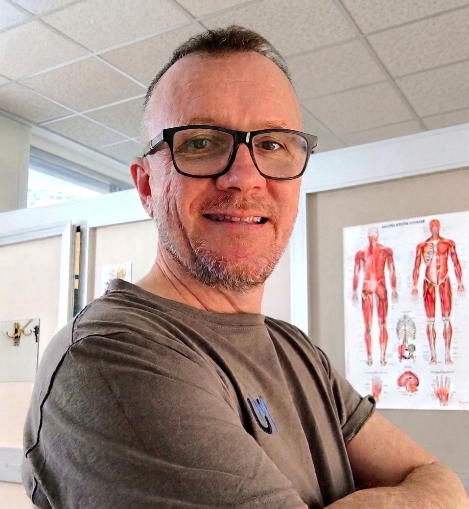
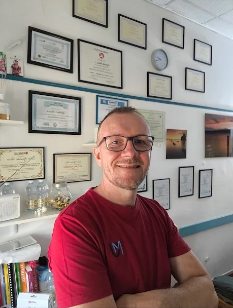
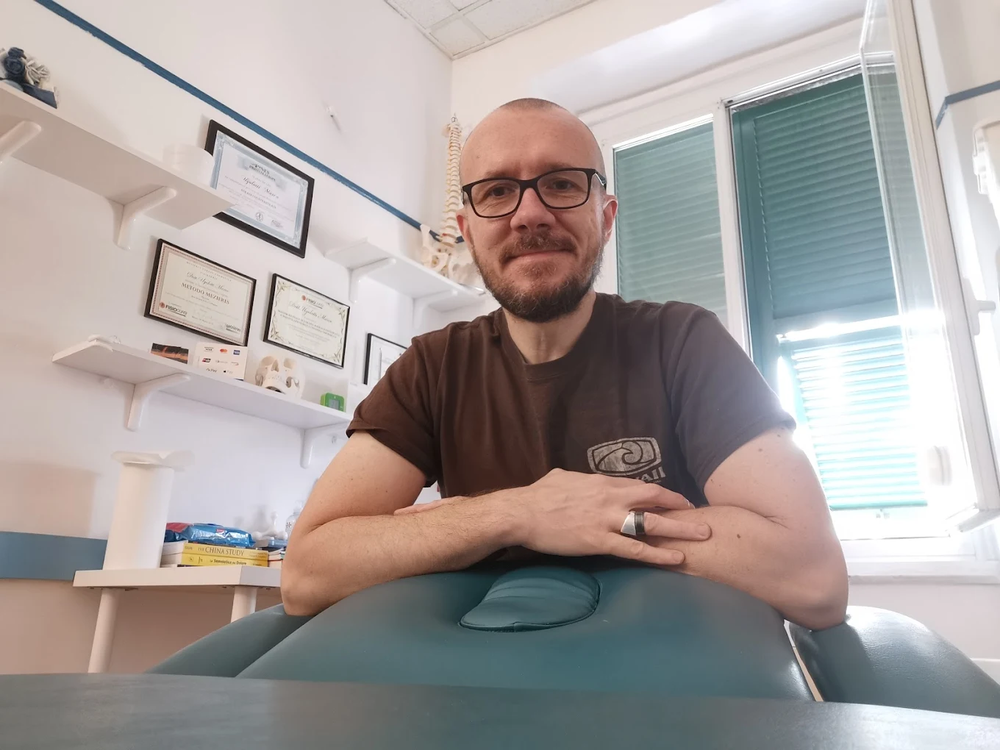
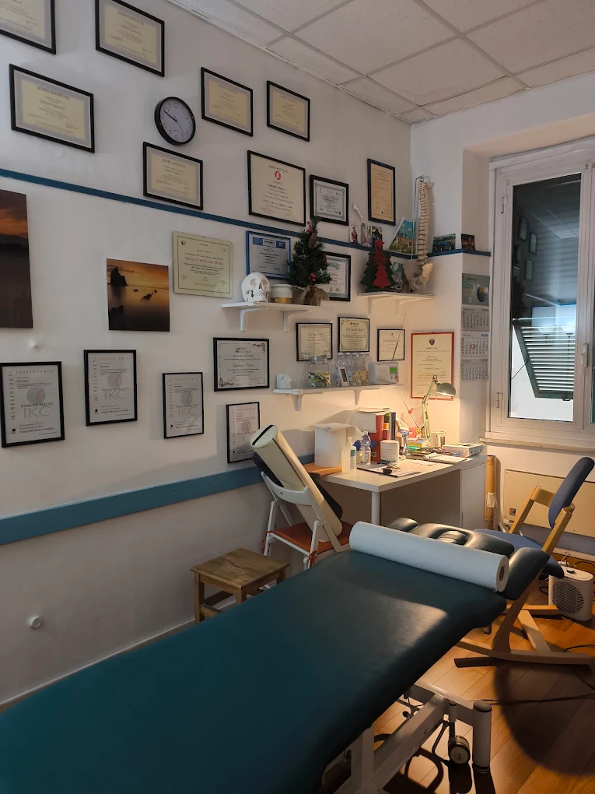
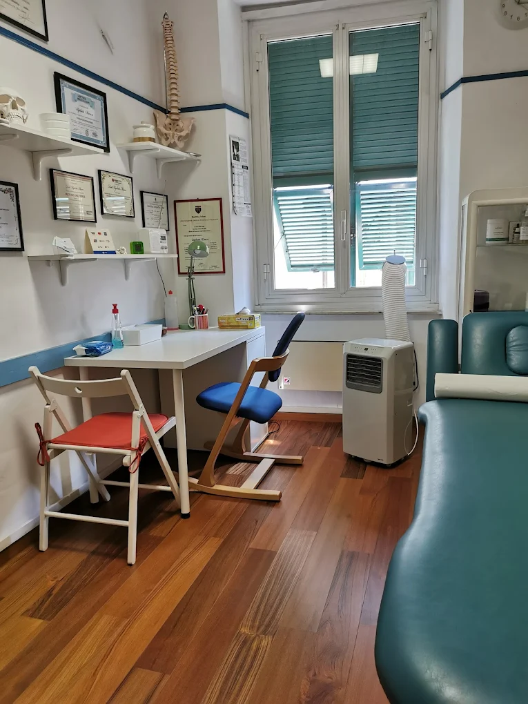

Fisioterapia e Medicina Manuale Osteopatica
✔ Oltre 30 anni di esperienza clinica
✔ Certificazione Internazionale Strain Counterstrain (JSCC)
✔ Approccio personalizzato su ogni paziente
Aiuto persone con dolori cronici, rigidità e limitazioni nei movimenti che non hanno trovato sollievo con altri trattamenti, attraverso un approccio manuale delicato e altamente mirato.
Rispondo personalmente su WhatsApp
Studio facilmente raggiungibile vicino a Genova Principe

Oltre 30 anni di esperienza e passione per la medicina manuale

Mi chiamo Marco Ugolotti e lavoro come fisioterapista a Genova da più di 30 anni. La mia specialità è la Medicina Manuale Osteopatica, con certificazione internazionale in Strain Counterstrain (JSCC).
Il mio obiettivo è aiutare i pazienti a recuperare il benessere attraverso trattamenti manuali mirati, precisi e completamente personalizzati. Creo un ambiente di fiducia dove l'ascolto e la collaborazione con il paziente sono fondamentali per trovare il percorso terapeutico più efficace.
Credo che ogni persona meriti un approccio umano e competente, quindi ogni trattamento è pensato in base alle esigenze specifiche e alla storia clinica del paziente.
Competenza clinica consolidata in medicina manuale osteopatica e fisioterapia
Specializzato in Strain Counterstrain – tecnica riconosciuta a livello mondiale
Ogni paziente è unico e riceve un trattamento su misura delle sue esigenze
Se soffri di dolori che persistono nel tempo, rigidità o limitazioni nei movimenti, e i trattamenti provati finora non hanno dato risultati duraturi, è possibile che la causa non sia strutturale, ma neuromuscolare.
La tecnica Strain Counterstrain (SCS) è il mio approccio principale: un metodo osteopatico manuale, delicato e completamente indolore che agisce direttamente sul sistema nervoso.
Attraverso un posizionamento specifico del corpo in condizioni di massimo comfort, in circa 90 secondi è possibile disattivare i "tender points" (punti di tensione) indicatori della disfunzione, permettendo al sistema nervoso di ristabilire un equilibrio naturale.
Questo si traduce in una riduzione del dolore, un miglioramento della mobilità e una sensazione di sollievo senza manovre invasive o brusche.
Molti dolori cronici non sono causati da lesioni strutturali, ma da disfunzioni neuromuscolari. Lo Strain Counterstrain aiuta a trattarle in modo naturale.

Se avverti uno di questi problemi, lo Strain Counterstrain potrebbe essere il trattamento che stai cercando:
Una valutazione professionale può aiutarti a individuare la causa del problema e iniziare il percorso di recupero.
Un ambiente accogliente e professionale per la tua cura


Lo Strain Counterstrain è alla base del mio approccio. Quando necessario, viene integrato con altri trattamenti specifici per supportare il recupero.
La base di tutti i miei trattamenti. Per dolori cronici, limitazioni del movimento e disfunzioni neuromuscolari che non rispondono ad altri approcci.
✓ Tecnica delicata e mirata · ✓ Approccio completamente indolore · ✓ Miglioramenti percepibili già dalle prime sedute
Trattamento delle problematiche meccaniche e disfunzionali legate alla Colonna Vertebrale
Programmi di recupero post-traumatico e post-operatorio per tornare alle attività quotidiane.
Per prevenire recidive e mantenere i risultati nel tempo con esercizi personalizzati.
Per accelerare guarigione e ridurre infiammazione in casi acuti o complessi.
Per supportare i processi naturali di guarigione tissutale.
I pazienti apprezzano soprattutto la competenza nel trattamento, l'attenzione personalizzata durante le sedute, i risultati concreti e l'approccio umano e rassicurante.
Professionista serio e competente. Mi ha aiutato a risolvere un problema alla spalla che mi accompagnava da anni. Consigliatissimo.
Molto professionale ed empatico. Si prende cura del paziente con attenzione e disponibilità. Mi sono trovata benissimo.
Ottimo fisioterapista, ti mette subito a tuo agio. Ho avuto sollievo fin dalle prime sedute. Lo consiglio fortemente.
Leggi tutte le nostre recensioni su Google
Visualizza su GoogleFacilmente raggiungibile dal centro di Genova
Via Andrea Doria, 4/5
16126 Genova GE, Italia
Lunedì - Venerdì: 8:00 - 19:00
Sabato: 8:00 - 12:00
Su appuntamento
Parcheggio disponibile
La zona è ben servita da parcheggi pubblici e privati.
A circa 5 minuti a piedi dalla fermata.
Stazione Genova Principe
5 minuti a piedi dalla stazione.
Linee AMT locali
Diverse linee di autobus passano per Via Andrea Doria. Consulta la mappa AMT per la fermata Principe Capolinea (Fs).
Orari su appuntamento. Contattami per verificare la disponibilità.
Risposte alle domande più comuni sulla tecnica Strain Counterstrain
È un approccio manuale osteopatico che agisce sul sistema nervoso. Invece di "forzare" un muscolo contratto, lo portiamo in una posizione di massimo accorciamento e comfort per 90 secondi. Questo invia un segnale al sistema nervoso per "resettare" il riflesso della contrazione, eliminando il dolore e la tensione in modo immediato e naturale.
Assolutamente no. A differenza di molte tecniche di terapia manuale o manipolazioni vertebrali, lo Strain Counterstrain viene eseguito sempre in assenza di dolore. È una tecnica passiva: il terapista muove il tuo corpo verso una posizione di sollievo. È ideale anche per chi soffre di dolore acuto o infiammazioni forti.
La sigla JSCC (Jones Strain Counterstrain Certified) indica una certificazione internazionale di alto livello rilasciata dal Jones Institute. Certifica che il professionista ha completato un percorso di studi rigoroso e ha superato esami specifici per padroneggiare questa metodica con la massima precisione clinica.
Ogni paziente è unico, ma molti avvertono un miglioramento significativo già dopo la prima seduta. In genere un ciclo di 3-5 trattamenti è sufficiente per risolvere disfunzioni croniche o acute, a seconda della complessità del caso. Durante la valutazione iniziale, potrai avere una previsione più precisa in base al tuo quadro clinico.
Lo Strain Counterstrain è efficace per dolori cronici, limitazioni del movimento, disfunzioni neuromuscolari, problemi cervicali, dorsali, lombari, e problematiche articolari (spalla, ginocchio, caviglia, ecc.). È particolarmente utile per pazienti che non rispondono bene ad altre terapie o che soffrono di dolore acuto e infiammazione.
Tutto quello che devi sapere prima di venire
Puoi contattarmi direttamente per avere informazioni o fissare un appuntamento.